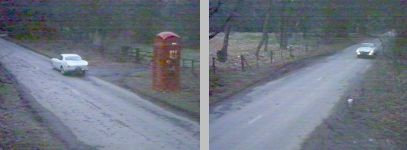
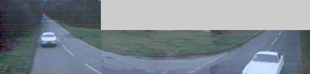
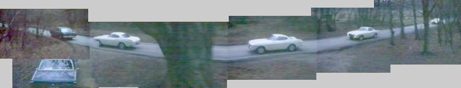
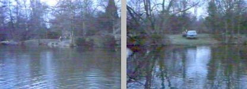
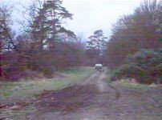
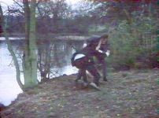

|
|
HELP FIND THE FOLLOWING LOCATIONS
PAGE 42
THE SAINT: The
Desperate Diplomat (Ray
Austin: 1968)
Unknown
4 - Walter Faber phones Simon Templar from
a phone box (Assume that this is a prop phone box). Later that night
Simon Templar
arrives in his Volvo to collect information about Sara's kidnap.

Unknown 5 - Simon Templar drives towards the phone box.

Unknown 6 - Simon Templar drives towards the Phone box and passes Faber's car. A few minutes later Faber follows.

Unknown 8 - Faber is holding Sara Douglas hostage as Simon Templar arrives on the opposite side of the lake. Faber tries to negotiate a deal with Templar as Eddie Margoles waits with a gun to kill Templar. Simon grabs Eddie and Faber shoots him by accident. In the confusion Sara is able to drive away in Faber's car.
 

Think you know a spot? Need a bigger image? Email me.
< Previous | Index | Avengerland | Next >
Copyright © 2003 Anthony R. McKay